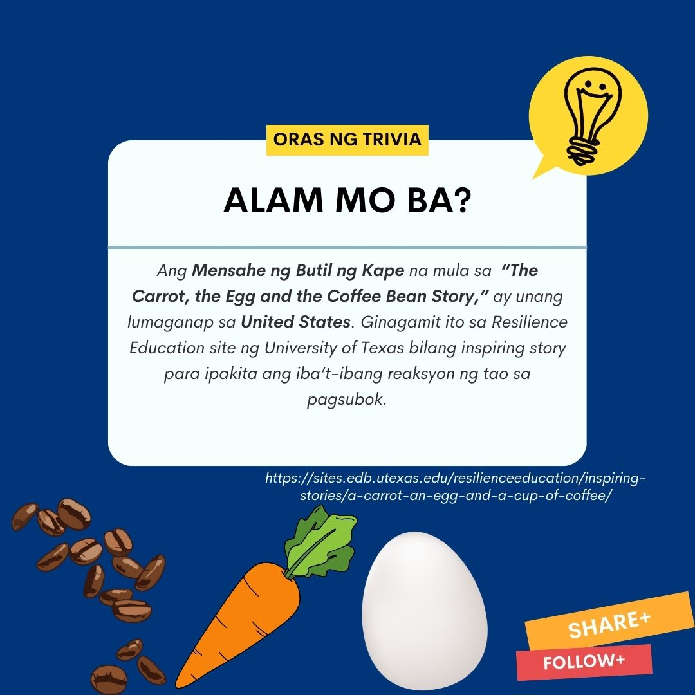
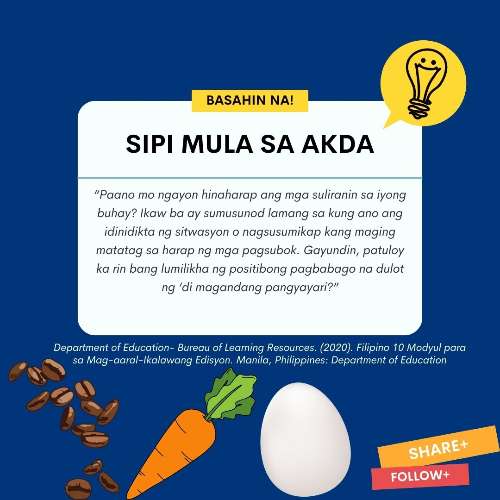
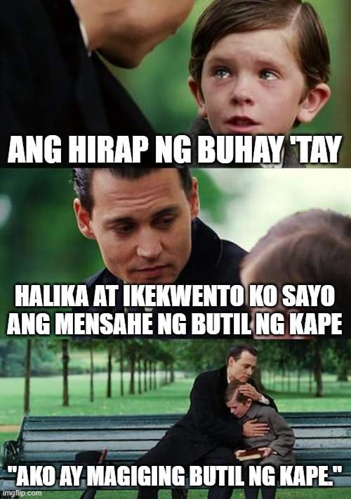
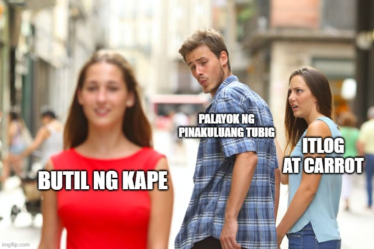
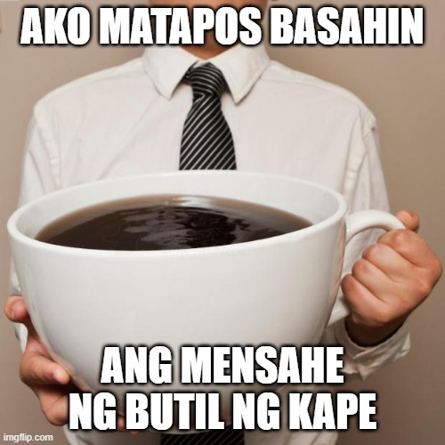

Mensahe ng Butil ng Kape

Mensahe ng Butil ng Kape
Mga Sanggunian
Mula sa Elements of Literature nina Holt et. al. 2008. Texas, USA
2020: "Department of Education- Bureau of Learning Resources. Filipino 10 Modyul para sa Mag-aaral-Ikalawang Edisyon. Manila, Philippines: Department of Education
TRIVIA BOARD


“The Story of a Carrot, Egg, and a Coffee Bean”
(Isinalin sa Filipino ni Willita A. Enrijo)
Isang araw, habang nagbubungkal ng lupa ang magsasaka, narinig niyang nagmamaktol ang kaniyang anak na lalaki. Narinig nitong binabanggit ng kaniyang anak ang hirap at pagod na nararanasan sa pagsasaka at pagbubungkal ng bukirin. Ayon pa sa anak , nararamdaman niya na hindi makatarungan ang kaniyang buhay dahil sa hirap na nararanasan niya. Sa pagkakataong iyon, tiningnan ng ama ang anak at tinawag niya papunta sa kusina. Sa una’y nilagyan ng ama ang tatlong palayok ng tubig at saka isinalang sa apoy. Walang narinig na ano mang salitaan sa mga oras na yaon. Hinayaan lamang nila ang nakasalang na mga palayok. Hindi nagtagal, kumulo ang tubig. Sa unang palayok, inilagay ng ama ang carrot. Sa pangalawa naman ay mga itlog. Sa panghuli, butil ng kape ang inilahok. “Sa tingin mo, ano ang maaaring mangyari sa carrot, itlog at butil ng kape na aking inilahok?” tanong ng ama. “Maluluto?” kibit-balikat na tugon ng anak. Makalipas ang dalawampung minuto, inalis ng ama ang mga baga at pinalapit ang anak sa mga palayok. “Damhin mo ang mga ito,” hikayat ng ama. “Ano ang iyong napuna?” bulong ng ama. Napansin ng anak na ang carrot ay lumambot. Inutusan naman siya ng ama na kunin ang itlog at hatiin ito. Matapos mabalatan ang itlog, napansin niya na buo at matigas na ito dahil sa pagkakalaga.
“Higupin mo ang kape,” utos ng ama.
“Bakit po?” nagugulumihanang tanong ng anak.
Nagsimulang magpaliwanag ang ama tungkol sa dinaanang proseso ng carrot, itlog, at butil ng kape. Pare-pareho itong inilahok sa kumukulong tubig subalit iba-iba ang naging reaksiyon. Ang carrot na sa una ay matigas, malakas, at tila di matitinag subalit matapos mailahok sa kumukulong tubig ay naging malambot na kumakatawan sa kahinaan. Ang itlog na may puti at manipis na balat bilang proteksiyon sa likidong nasa loob nito, ay naging matigas matapos mapakuluan. Samantala, ang butil ng kape nang ito ay mailahok sa kumukulong tubig ay natunaw ngunit kapalit nito ay karagdagang sangkap na magpapatingkad dito. “Alin ka sa kanila? tanong ng ama sa anak. “Ngayon, nais kong ikintal mo ito sa iyong isipan, ang kumukulong tubig ay katumbas ng suliranin sa buhay. Kapag ito ay kumatok sa ating pinto, paano ka tutugon? Ikaw ba ay magiging carrot, itlog o butil ng kape?” usal ng ama. “Ikaw ba ay magiging carrot na malakas sa una subalit nang dumating ang pagsubok ay naging mahina? O kaya naman ay magiging tulad ng itlog na ang labas na balat ay nagpapakita ng kabutihan ng puso subalit nabago ng init ng kumukulong tubig? Ang itlog ay nagpapaalala na minsan may mga taong sa una ay may mabuting puso subalit kapag dumaan ang pagsubok tulad ng sigalot sa pamilya o mga kaibigan, sila ay nagkakaroon ng matigas na kalooban upang hindi igawad ang kapatawaran sa nagkasala. O maging tulad ka kaya ng butil ng kape na nakapagpabago sa kumukulong tubig? Kapuna-puna na sa tulong ng butil ng kape, nadagdagan ng kulay at bango ang kumukulong tubig,” paliwanag ng ama. “Kung ikaw ay tulad ng butil ng kape, ikaw ay magiging matatag sa oras ng pagsubok. Higit sa lahat, ikaw mismo ang magpapabago sa mga pangyayari sa paligid mo,” dagdag na paliwanag ng ama.
“Paano mo ngayon hinaharap ang mga suliranin sa iyong buhay?”
Ikaw ba ay sumusunod lamang sa kung ano ang idinidikta ng sitwasyon o nagsusumikap kang maging matatag sa harap ng mga pagsubok. Gayundin, patuloy ka rin bang lumilikha ng positibong pagbabago na dulot ng di magagandang pangyayari?
“Kaya anak, ikaw ba ay carrot , itlog, o butil ng kape?” tanong muli ng ama.
Ngumiti ang anak, kasunod ang tugon – “ako ay magiging butil ng kape...” katulad mo mahal na ama.
MEME korner


